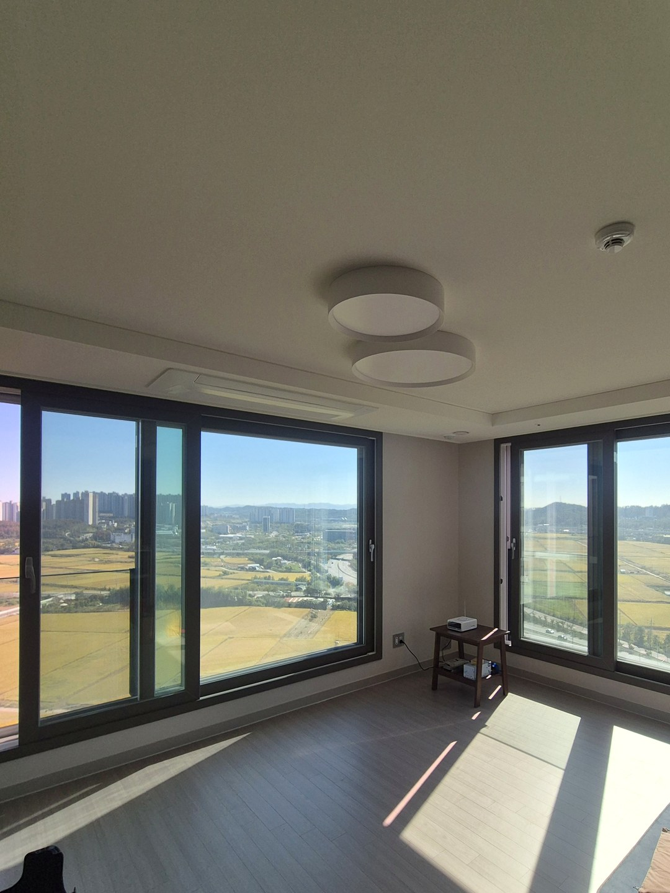
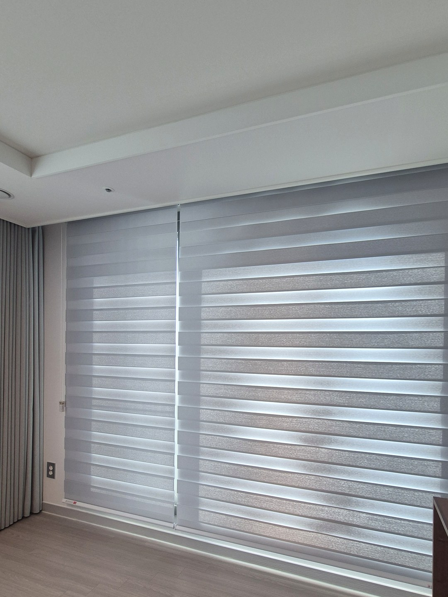
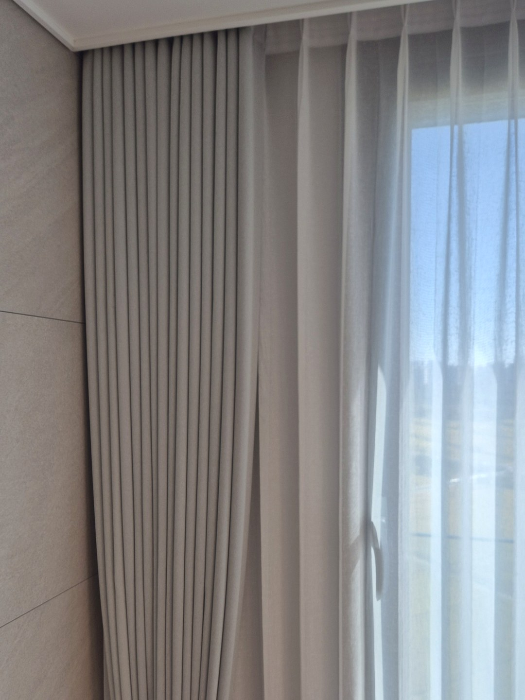
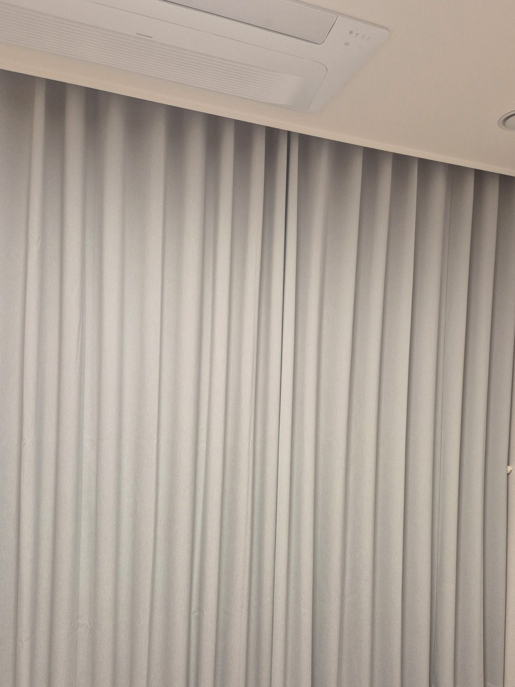
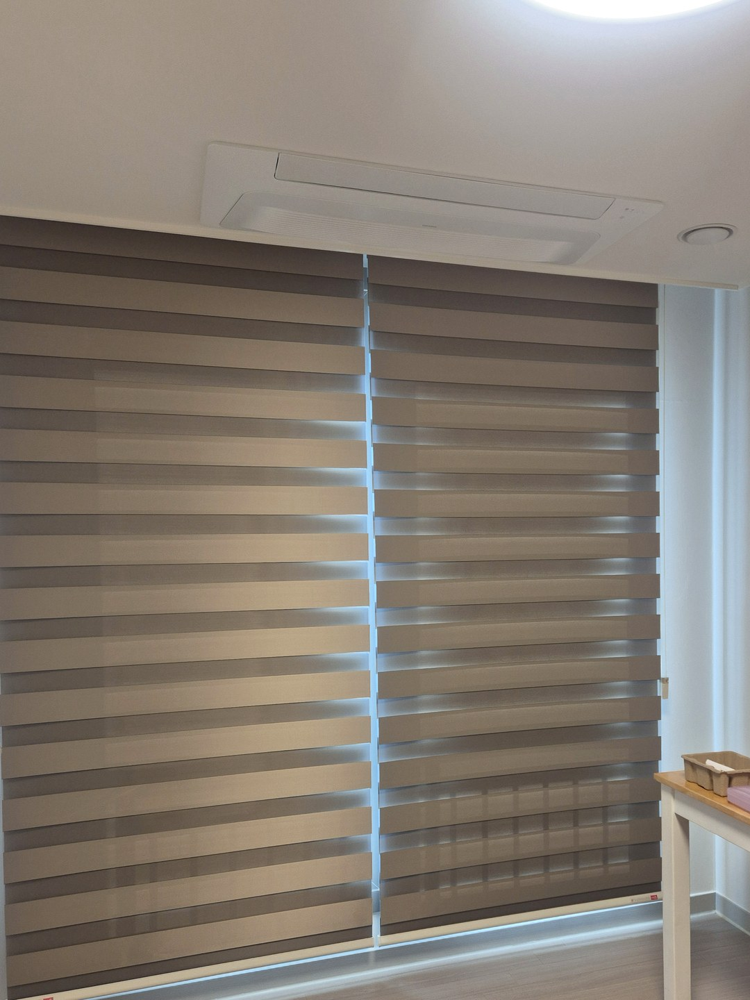
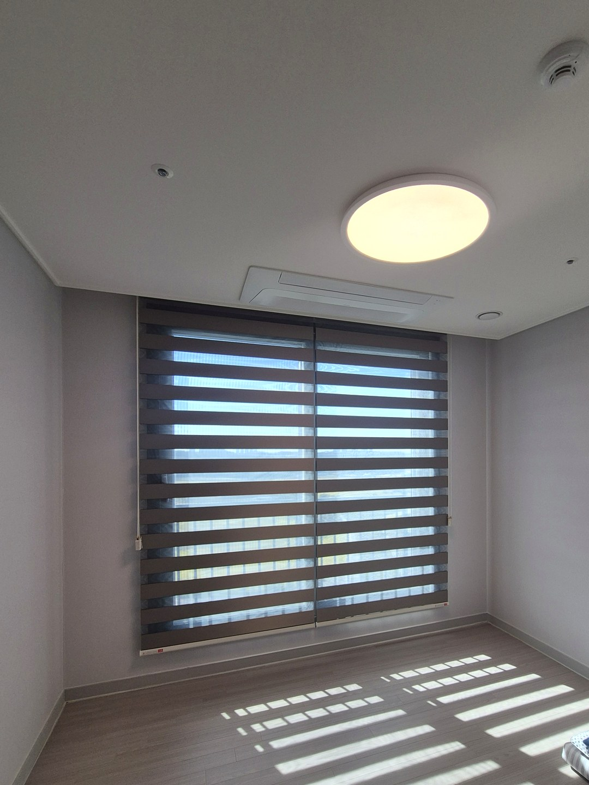
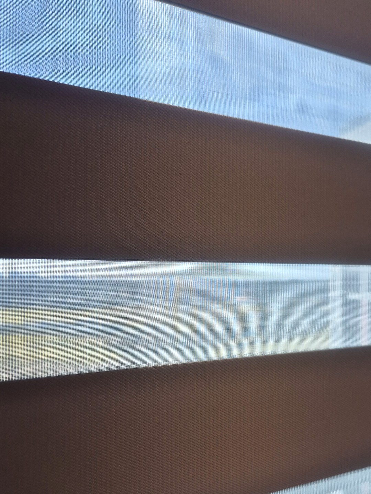

2026년 10월 8일 시공
포항 초곡 힐스테이트
콤비블라인드·암막커튼 시공후기

포항 초곡 힐스테이트 탑층 세대에 콤비블라인드와 암막커튼을 설치했습니다.
거실이 ㄱ자로 꺾여 있어 창 두 면의 방향이 다릅니다.
그래서 면마다 제품을 따로 정하고, 색은 회색 계열로 맞췄습니다.
설치 전 — 창 두 면이 다른 방향

앞을 가리는 건물이 없어 들판과 산이 멀리까지 보이는 거실이었습니다.
왼쪽이 아침 해가 드는 동쪽 창, 오른쪽으로 꺾인 큰 창이 남향입니다.
동쪽 창 — 암막콤비블라인드

동쪽 창은 이른 아침부터 볕이 곧장 들어오는 자리입니다.
콤비블라인드는 두 겹 원단의 줄을 겹치면 가려지고, 어긋내면 줄 사이로 밖이 보입니다.
아침에는 닫고 낮에는 열어 두는 식으로 볕의 양을 맞추실 수 있습니다.
남향 창 — 속커튼과 암막커튼 두 겹

남향은 경치가 좋아 낮 동안 가려 버리기 아까운 창이었습니다.
안쪽에는 빛이 비치는 린넨 느낌 속커튼을, 바깥쪽에는 그레이톤 암막커튼을 달았습니다.
낮에는 속커튼 한 겹, 밤에는 암막까지 두 겹으로 쓰시면 됩니다.
안방 — 거실과 같은 그레이톤 암막커튼

안방은 거실 암막커튼과 같은 색으로 골라 방을 옮겨도 분위기가 이어지게 했습니다.
커튼은 천장 가까이에서 바닥 가까이까지 내려와 창을 통째로 덮습니다.
동향 작은방 두 곳 — 갈색 암막콤비블라인드


작은방 두 곳도 동쪽을 보고 있어 거실 동쪽 창과 같은 암막콤비블라인드로 정했습니다.
원단은 갈색 계열이라 거실의 회색과는 다른, 조금 따뜻한 느낌입니다.
미리 알아 두실 점 — 콤비블라인드의 빛

콤비블라인드는 원단이 줄무늬로 엇갈리는 구조라, 다 닫아도 양옆과 줄 사이로 빛이 약간 들어옵니다.
잠을 자는 방처럼 빛을 더 막아야 하는 자리라면 커튼을 함께 쓰는 쪽이 낫습니다.
이 집은 아침 볕을 줄이면서 낮에 바깥을 보는 쪽을 골라 콤비블라인드로 정했습니다.
비슷한 시공


포항자이디오션(2026년 10월 입주) 커튼 준비 일정 보기 →